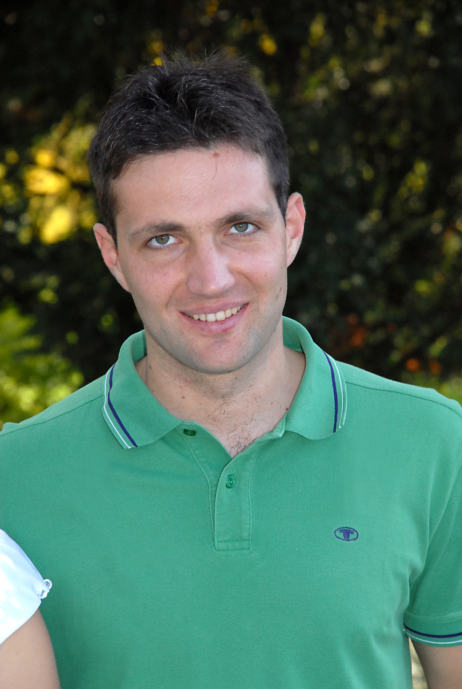

OUR TEAM
-
 Marija Đokić-Petrović
Developer
Marija Đokić-Petrović
Developer
Marija Đokić-Petrović is Research Associate and PhD student at the Faculty of Science, University of Kragujevac, Serbia. Since November 2011 she has been a researcher at the Faculty of Science, University of Kragujevac, Serbia. She is involved in Preclinical Testing of Bioactive Substances (PIBAS), a Project financed by the Ministry of Education and Science in the Republic of Serbia (Project Number 41010). Her research interests include Semantic Web technologies and Bioinformatics.
She is currently engaged as Software Developer in Virtual World Services GmbH, supported by Technical University Graz. -
 Branko Arsić Developer
Branko Arsić is a teaching assistant at the Department of Mathematics and Informatics, Faculty of Science, University of Kragujevac, Serbia. He is the co-author of seven papers published in peer reviewed journals and conference proceedings. Application of spectral graph theory in computer sciences along with semantic model development and tools for large scale integrative data mining of Internet social networks are in the focus of his research.
He is currently engaged as a visiting scholar at Center for Data Analytics and Biomedical Informatics, Temple University, Philadelphia, USA. -
 Marko Živanović
Researcher
Marko Živanović
Researcher
Marko Živanović finished his PhD in Cell and Molecular Biology at Masaryk University, Czech Republic. Since May 2011 he is reasearcher at Faculty of Science, University of Kragujevac, Serbia. Marko`s main activities are related to preclinical testing of newly synthesized active substances on cancer cells through project III41010 PIBAS (Preclinical Testing of Bioactive Substances). His research interests are preclinical testings, cancer biology, electrochemistry and biosensors.